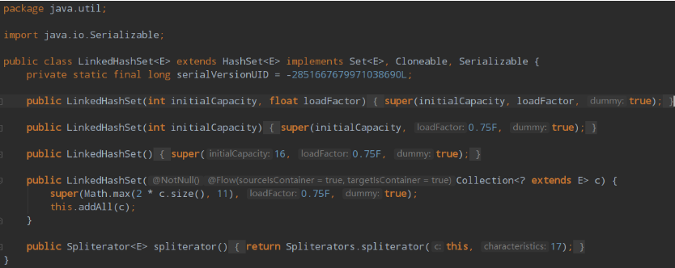

集合在我们日常开发使用的次数数不胜数，ArrayList/LinkedList/HashMap/HashSet······信手拈来，抬手就拿来用，在 IDE 上龙飞凤舞，但是作为一名合格的优雅的程序猿，仅仅了解怎么使用API是远远不够的，如果在调用API时，知道它内部发生了什么事情，就像开了透视外挂一样，洞穿一切，这种感觉才真的爽，而且这样就不是集合提供什么功能给我们使用，而是我们选择使用它的什么功能了。
集合框架总览
下图堪称集合框架的上帝视角，讲到集合框架不得不看的就是这幅图，当然，你会觉得眼花缭乱，不知如何看起，这篇文章带你一步一步地秒杀上面的每一个接口、抽象类和具体类。我们将会从最顶层的接口开始讲起，一步一步往下深入，帮助你把对集合的认知构建起一个知识网络。
工欲善其事必先利其器，让我们先来过一遍整个集合框架的组成部分：
- 集合框架提供了两个遍历接口：
Iterator和ListIterator，其中后者是前者的优化版，支持在任意一个位置进行前后双向遍历。注意图中的Collection应当继承的是Iterable而不是Iterator，后面会解释Iterable和Iterator的区别 - 整个集合框架分为两个门派（类型）：
Collection和Map，前者是一个容器，存储一系列的对象；后者是键值对<key, value>，存储一系列的键值对 - 在集合框架体系下，衍生出四种具体的集合类型：
Map、Set、List、Queue Map存储<key,value>键值对，查找元素时通过key查找valueSet内部存储一系列不可重复的对象，且是一个无序集合，对象排列顺序不一List内部存储一系列可重复的对象，是一个有序集合，对象按插入顺序排列Queue是一个队列容器，其特性与List相同，但只能从队头和队尾操作元素- JDK 为集合的各种操作提供了两个工具类
Collections和Arrays，之后会讲解工具类的常用方法 - 四种抽象集合类型内部也会衍生出许多具有不同特性的集合类，不同场景下择优使用，没有最佳的集合
上面了解了整个集合框架体系的组成部分，接下来的章节会严格按照上面罗列的顺序进行讲解，每一步都会有承上启下的作用
学习
Set前，最好最好要先学习Map，因为Set的操作本质上是对Map的操作，往下看准没错
Iterator Iterable ListIterator
在第一次看这两个接口，真以为是一模一样的，没发现里面有啥不同，存在即合理，它们两个还是有本质上的区别的。
首先来看Iterator接口：
public interface Iterator<E> {
boolean hasNext();
E next();
void remove();
}
复制代码提供的API接口含义如下：
hasNext()：判断集合中是否存在下一个对象next()：返回集合中的下一个对象，并将访问指针移动一位remove()：删除集合中调用next()方法返回的对象
在早期，遍历集合的方式只有一种，通过Iterator迭代器操作
List<Integer> list = new ArrayList<>();
list.add(1);
list.add(2);
list.add(3);
Iterator iter = list.iterator();
while (iter.hasNext()) {
Integer next = iter.next();
System.out.println(next);
if (next == 2) { iter.remove(); }
}
复制代码再来看Iterable接口：
public interface Iterable<T> {
Iterator<T> iterator();
// JDK 1.8
default void forEach(Consumer<? super T> action) {
Objects.requireNonNull(action);
for (T t : this) {
action.accept(t);
}
}
}
复制代码可以看到Iterable接口里面提供了Iterator接口，所以实现了Iterable接口的集合依旧可以使用迭代器遍历和操作集合中的对象；
而在 JDK 1.8中，Iterable提供了一个新的方法forEach()，它允许使用增强 for 循环遍历对象。
List<Integer> list = new ArrayList<>();
for (Integer num : list) {
System.out.println(num);
}
复制代码我们通过命令：javap -c反编译上面的这段代码后，发现它只是 Java 中的一个语法糖，本质上还是调用Iterator去遍历。
翻译成代码，就和一开始的Iterator迭代器遍历方式基本相同了。
Iterator iter = list.iterator();
while (iter.hasNext()) {
Integer num = iter.next();
System.out.println(num);
}
复制代码还有更深层次的探讨：为什么要设计两个接口
Iterable和Iterator，而不是保留其中一个就可以了。简单讲解：
Iterator的保留可以让子类去实现自己的迭代器，而Iterable接口更加关注于for-each的增强语法。具体可参考：Java中的Iterable与Iterator详解
关于Iterator和Iterable的讲解告一段落，下面来总结一下它们的重点：
Iterator是提供集合操作内部对象的一个迭代器，它可以遍历、移除对象，且只能够单向移动Iterable是对Iterator的封装，在JDK 1.8时，实现了Iterable接口的集合可以使用增强 for 循环遍历集合对象，我们通过反编译后发现底层还是使用Iterator迭代器进行遍历
等等，这一章还没完，还有一个ListIterator。它继承 Iterator 接口，在遍历List集合时可以从任意索引下标开始遍历，而且支持双向遍历。
ListIterator 存在于 List 集合之中，通过调用方法可以返回起始下标为 index的迭代器
List<Integer> list = new ArrayList<>();
// 返回下标为0的迭代器
ListIterator<Integer> listIter1 = list.listIterator();
// 返回下标为5的迭代器
ListIterator<Integer> listIter2 = list.listIterator(5);
复制代码ListIterator 中有几个重要方法，大多数方法与 Iterator 中定义的含义相同，但是比 Iterator 强大的地方是可以在任意一个下标位置返回该迭代器，且可以实现双向遍历。
public interface ListIterator<E> extends Iterator<E> {
boolean hasNext();
E next();
boolean hasPrevious();
E previous();
int nextIndex();
int previousIndex();
void remove();
// 替换当前下标的元素,即访问过的最后一个元素
void set(E e);
void add(E e);
}
复制代码Map 和 Collection 接口
Map 接口和 Collection 接口是集合框架体系的两大门派，Collection 是存储元素本身，而 Map 是存储<key, value>键值对，在 Collection 门派下有一小部分弟子去偷师，利用 Map 门派下的弟子来修炼自己。
是不是听的一头雾水哈哈哈，举个例子你就懂了：HashSet底层利用了HashMap，TreeSet底层用了TreeMap，LinkedHashSet底层用了LinkedHashMap。
下面我会详细讲到各个具体集合类哦，所以在这里，我们先从整体上了解这两个门派的特点和区别。

Map接口定义了存储的数据结构是<key, value>形式，根据 key 映射到 value，一个 key 对应一个 value ，所以key不可重复，而value可重复。
在Map接口下会将存储的方式细分为不同的种类：
SortedMap接口：该类映射可以对<key, value>按照自己的规则进行排序，具体实现有 TreeMapAbsractMap：它为子类提供好一些通用的API实现，所有的具体Map如HashMap都会继承它
而Collection接口提供了所有集合的通用方法（注意这里不包括Map）：
- 添加方法：
add(E e)/addAll(Collection<? extends E> var1) - 删除方法：
remove(Object var1)/removeAll(Collection<?> var1) - 查找方法：
contains(Object var1)/containsAll(Collection<?> var1); - 查询集合自身信息：
size()/isEmpty() - ···
在Collection接口下，同样会将集合细分为不同的种类：
Set接口：一个不允许存储重复元素的无序集合，具体实现有HashSet/TreeSet···List接口：一个可存储重复元素的有序集合，具体实现有ArrayList/LinkedList···Queue接口：一个可存储重复元素的队列，具体实现有PriorityQueue/ArrayDeque···
Map 集合体系详解
Map接口是由<key, value>组成的集合，由key映射到唯一的value，所以Map不能包含重复的key，每个键至多映射一个值。下图是整个 Map 集合体系的主要组成部分，我将会按照日常使用频率从高到低一一讲解。
不得不提的是 Map 的设计理念：定位元素的时间复杂度优化到 O(1)
Map 体系下主要分为 AbstractMap 和 SortedMap两类集合
AbstractMap是对 Map 接口的扩展，它定义了普通的 Map 集合具有的通用行为，可以避免子类重复编写大量相同的代码，子类继承 AbstractMap 后可以重写它的方法，实现额外的逻辑，对外提供更多的功能。
SortedMap 定义了该类 Map 具有 排序行为，同时它在内部定义好有关排序的抽象方法，当子类实现它时，必须重写所有方法，对外提供排序功能。
HashMap
HashMap 是一个最通用的利用哈希表存储元素的集合，将元素放入 HashMap 时，将key的哈希值转换为数组的索引下标确定存放位置，查找时，根据key的哈希地址转换成数组的索引下标确定查找位置。
HashMap 底层是用数组 + 链表 + 红黑树这三种数据结构实现，它是非线程安全的集合。
发送哈希冲突时，HashMap 的解决方法是将相同映射地址的元素连成一条链表，如果链表的长度大于8时，且数组的长度大于64则会转换成红黑树数据结构。
关于 HashMap 的简要总结：
- 它是集合中最常用的
Map集合类型，底层由数组 + 链表 + 红黑树组成 - HashMap不是线程安全的
- 插入元素时，通过计算元素的
哈希值，通过哈希映射函数转换为数组下标；查找元素时，同样通过哈希映射函数得到数组下标定位元素的位置
LinkedHashMap
LinkedHashMap 可以看作是 HashMap 和 LinkedList 的结合：它在 HashMap 的基础上添加了一条双向链表，默认存储各个元素的插入顺序，但由于这条双向链表，使得 LinkedHashMap 可以实现 LRU缓存淘汰策略，因为我们可以设置这条双向链表按照元素的访问次序进行排序
LinkedHashMap 是 HashMap 的子类，所以它具备 HashMap 的所有特点，其次，它在 HashMap 的基础上维护了一条双向链表，该链表存储了所有元素，默认元素的顺序与插入顺序一致。若accessOrder属性为true，则遍历顺序按元素的访问次序进行排序。
// 头节点
transient LinkedHashMap.Entry<K, V> head;
// 尾结点
transient LinkedHashMap.Entry<K, V> tail;
复制代码利用 LinkedHashMap 可以实现 LRU 缓存淘汰策略，因为它提供了一个方法：
protected boolean removeEldestEntry(java.util.Map.Entry<K, V> eldest) {
return false;
}
复制代码该方法可以移除最靠近链表头部的一个节点，而在get()方法中可以看到下面这段代码，其作用是挪动结点的位置：
if (this.accessOrder) {
this.afterNodeAccess(e);
}
复制代码只要调用了get()且accessOrder = true，则会将该节点更新到链表尾部，具体的逻辑在afterNodeAccess()中，感兴趣的可翻看源码，篇幅原因这里不再展开。
现在如果要实现一个LRU缓存策略，则需要做两件事情：
- 指定
accessOrder = true可以设定链表按照访问顺序排列，通过提供的构造器可以设定accessOrder
public LinkedHashMap(int initialCapacity, float loadFactor, boolean accessOrder) {
super(initialCapacity, loadFactor);
this.accessOrder = accessOrder;
}
复制代码- 重写
removeEldestEntry()方法，内部定义逻辑，通常是判断容量是否达到上限，若是则执行淘汰。
这里就要贴出一道大厂面试必考题目：146. LRU缓存机制，只要跟着我的步骤，就能顺利完成这道大厂题了。
关于 LinkedHashMap 主要介绍两点：
- 它底层维护了一条
双向链表，因为继承了 HashMap，所以它也不是线程安全的 - LinkedHashMap 可实现
LRU缓存淘汰策略，其原理是通过设置accessOrder为true并重写removeEldestEntry方法定义淘汰元素时需满足的条件
TreeMap
TreeMap 是 SortedMap 的子类，所以它具有排序功能。它是基于红黑树数据结构实现的，每一个键值对<key, value>都是一个结点，默认情况下按照key自然排序，另一种是可以通过传入定制的Comparator进行自定义规则排序。
// 按照 key 自然排序，Integer 的自然排序是升序
TreeMap<Integer, Object> naturalSort = new TreeMap<>();
// 定制排序，按照 key 降序排序
TreeMap<Integer, Object> customSort = new TreeMap<>((o1, o2) -> Integer.compare(o2, o1));
复制代码TreeMap 底层使用了数组+红黑树实现，所以里面的存储结构可以理解成下面这幅图哦。
图中红黑树的每一个节点都是一个Entry，在这里为了图片的简洁性，就不标明 key 和 value 了，注意这些元素都是已经按照key排好序了，整个数据结构都是保持着有序 的状态！
关于自然排序与定制排序：
- 自然排序：要求
key必须实现Comparable接口。
由于Integer类实现了 Comparable 接口，按照自然排序规则是按照key从小到大排序。
TreeMap<Integer, String> treeMap = new TreeMap<>();
treeMap.put(2, "TWO");
treeMap.put(1, "ONE");
System.out.print(treeMap);
// {1=ONE, 2=TWO}
复制代码- 定制排序：在初始化 TreeMap 时传入新的
Comparator，不要求key实现 Comparable 接口
TreeMap<Integer, String> treeMap = new TreeMap<>((o1, o2) -> Integer.compare(o2, o1));
treeMap.put(1, "ONE");
treeMap.put(2, "TWO");
treeMap.put(4, "FOUR");
treeMap.put(3, "THREE");
System.out.println(treeMap);
// {4=FOUR, 3=THREE, 2=TWO, 1=ONE}
复制代码通过传入新的Comparator比较器，可以覆盖默认的排序规则，上面的代码按照key降序排序，在实际应用中还可以按照其它规则自定义排序。
compare()`方法的返回值有三种，分别是：`0`，`-1`，`+1（1）如果返回0，代表两个元素相等，不需要调换顺序
（2）如果返回+1，代表前面的元素需要与后面的元素调换位置
（3）如果返回-1，代表前面的元素不需要与后面的元素调换位置
而何时返回+1和-1，则由我们自己去定义，JDK默认是按照自然排序，而我们可以根据key的不同去定义降序还是升序排序。
关于 TreeMap 主要介绍了两点：
- 它底层是由
红黑树这种数据结构实现的，所以操作的时间复杂度恒为O(logN) - TreeMap 可以对
key进行自然排序或者自定义排序，自定义排序时需要传入Comparator，而自然排序要求key实现了Comparable接口 - TreeMap 不是线程安全的。
WeakHashMap
WeakHashMap 日常开发中比较少见，它是基于普通的Map实现的，而里面Entry中的键在每一次的垃圾回收都会被清除掉，所以非常适合用于短暂访问、仅访问一次的元素，缓存在WeakHashMap中，并尽早地把它回收掉。
当Entry被GC时，WeakHashMap 是如何感知到某个元素被回收的呢？
在 WeakHashMap 内部维护了一个引用队列queue
private final ReferenceQueue<Object> queue = new ReferenceQueue<>();
复制代码这个 queue 里包含了所有被GC掉的键，当JVM开启GC后，如果回收掉 WeakHashMap 中的 key，会将 key 放入queue 中，在expungeStaleEntries()中遍历 queue，把 queue 中的所有key拿出来，并在 WeakHashMap 中删除掉，以达到同步。
private void expungeStaleEntries() {
for (Object x; (x = queue.poll()) != null; ) {
synchronized (queue) {
// 去 WeakHashMap 中删除该键值对
}
}
}
复制代码再者，需要注意 WeakHashMap 底层存储的元素的数据结构是数组 + 链表，没有红黑树哦，可以换一个角度想，如果还有红黑树，那干脆直接继承 HashMap ，然后再扩展就完事了嘛，然而它并没有这样做：
public class WeakHashMap<K, V> extends AbstractMap<K, V> implements Map<K, V> {
}
复制代码所以，WeakHashMap 的数据结构图我也为你准备好啦。

图中被虚线标识的元素将会在下一次访问 WeakHashMap 时被删除掉，WeakHashMap 内部会做好一系列的调整工作，所以记住队列的作用就是标志那些已经被GC回收掉的元素。
关于 WeakHashMap 需要注意两点：
- 它的键是一种弱键，放入 WeakHashMap 时，随时会被回收掉，所以不能确保某次访问元素一定存在
- 它依赖普通的
Map进行实现，是一个非线程安全的集合 - WeakHashMap 通常作为缓存使用，适合存储那些只需访问一次、或只需保存短暂时间的键值对
Hashtable
Hashtable 底层的存储结构是数组 + 链表，而它是一个线程安全的集合，但是因为这个线程安全，它就被淘汰掉了。
下面是Hashtable存储元素时的数据结构图，它只会存在数组+链表，当链表过长时，查询的效率过低，而且会长时间锁住 Hashtable。
这幅图是否有点眼熟哈哈哈哈，本质上就是 WeakHashMap 的底层存储结构了。你千万别问为什么 WeakHashMap 不继承 Hashtable 哦，Hashtable 的
性能在并发环境下非常差，在非并发环境下可以用HashMap更优。
HashTable 本质上是 HashMap 的前辈，它被淘汰的原因也主要因为两个字：性能
HashTable 是一个 线程安全 的 Map，它所有的方法都被加上了 synchronized 关键字，也是因为这个关键字，它注定成为了时代的弃儿。
HashTable 底层采用 数组+链表 存储键值对，由于被弃用，后人也没有对它进行任何改进
HashTable 默认长度为 11，负载因子为 0.75F，即元素个数达到数组长度的 75% 时，会进行一次扩容，每次扩容为原来数组长度的 2 倍
HashTable 所有的操作都是线程安全的。
Collection 集合体系详解
Collection 集合体系的顶层接口就是Collection，它规定了该集合下的一系列行为约定。
该集合下可以分为三大类集合：List，Set和Queue
Set接口定义了该类集合不允许存储重复的元素，且任何操作时均需要通过哈希函数映射到集合内部定位元素，集合内部的元素默认是无序的。
List接口定义了该类集合允许存储重复的元素，且集合内部的元素按照元素插入的顺序有序排列，可以通过索引访问元素。
Queue接口定义了该类集合是以队列作为存储结构，所以集合内部的元素有序排列，仅可以操作头结点元素，无法访问队列中间的元素。
上面三个接口是最普通，最抽象的实现，而在各个集合接口内部，还会有更加具体的表现，衍生出各种不同的额外功能，使开发者能够对比各个集合的优势，择优使用。
Set 接口
Set接口继承了Collection接口，是一个不包括重复元素的集合，更确切地说，Set 中任意两个元素不会出现 o1.equals(o2)，而且 Set 至多只能存储一个 NULL 值元素，Set 集合的组成部分可以用下面这张图概括：
在 Set 集合体系中，我们需要着重关注两点：
- 存入可变元素时，必须非常小心，因为任意时候元素状态的改变都有可能使得 Set 内部出现两个相等的元素，即
o1.equals(o2) = true，所以一般不要更改存入 Set 中的元素，否则将会破坏了equals()的作用！ - Set 的最大作用就是判重，在项目中最大的作用也是判重！
接下来我们去看它的实现类和子类： AbstractSet 和 SortedSet
AbstractSet 抽象类
AbstractSet 是一个实现 Set 的一个抽象类，定义在这里可以将所有具体 Set 集合的相同行为在这里实现，避免子类包含大量的重复代码
所有的 Set 也应该要有相同的 hashCode() 和 equals() 方法，所以使用抽象类把该方法重写后，子类无需关心这两个方法。
public abstract class AbstractSet implements Set {
// 判断两个 set 是否相等
public boolean equals(Object o) {
if (o == this) { // 集合本身
return true;
} else if (!(o instanceof Set)) { // 集合不是 set
return false;
} else {
// 比较两个集合的元素是否全部相同
}
}
// 计算所有元素的 hashcode 总和
public int hashCode() {
int h = 0;
Iterator i = this.iterator();
while(i.hasNext()) {
E obj = i.next();
if (obj != null) {
h += obj.hashCode();
}
}
return h;
}
}
复制代码 SortedSet 接口
SortedSet 是一个接口，它在 Set 的基础上扩展了排序的行为，所以所有实现它的子类都会拥有排序功能。
public interface SortedSet extends Set {
// 元素的比较器,决定元素的排列顺序
Comparator comparator();
// 获取 [var1, var2] 之间的 set
SortedSet subSet(E var1, E var2);
// 获取以 var1 开头的 Set
SortedSet headSet(E var1);
// 获取以 var1 结尾的 Set
SortedSet tailSet(E var1);
// 获取首个元素
E first();
// 获取最后一个元素
E last();
}
复制代码 HashSet
HashSet 底层借助 HashMap 实现，我们可以观察它的多个构造方法，本质上都是 new 一个 HashMap
这也是这篇文章为什么先讲解 Map 再讲解 Set 的原因！先学习 Map，有助于理解 Set
public class HashSet extends AbstractSet implements Set, Cloneable, Serializable {
public HashSet() {
this.map = new HashMap();
}
public HashSet(int initialCapacity, float loadFactor) {
this.map = new HashMap(initialCapacity, loadFactor);
}
public HashSet(int initialCapacity) {
this.map = new HashMap(initialCapacity);
}
}
复制代码 我们可以观察 add() 方法和remove()方法是如何将 HashSet 的操作嫁接到 HashMap 的。
private static final Object PRESENT = new Object();
public boolean add(E e) {
return this.map.put(e, PRESENT) == null;
}
public boolean remove(Object o) {
return this.map.remove(o) == PRESENT;
}
复制代码我们看到 PRESENT 就是一个静态常量：使用 PRESENT 作为 HashMap 的 value 值，使用HashSet的开发者只需关注于需要插入的 key，屏蔽了 HashMap 的 value
上图可以观察到每个Entry的value都是 PRESENT 空对象，我们就不用再理会它了。
HashSet 在 HashMap 基础上实现，所以很多地方可以联系到 HashMap：
- 底层数据结构：HashSet 也是采用
数组 + 链表 + 红黑树实现 - 线程安全性：由于采用 HashMap 实现，而 HashMap 本身线程不安全，在HashSet 中没有添加额外的同步策略，所以 HashSet 也线程不安全
- 存入 HashSet 的对象的状态最好不要发生变化，因为有可能改变状态后，在集合内部出现两个元素
o1.equals(o2)，破坏了equals()的语义。
LinkedHashSet
LinkedHashSet 的代码少的可怜，不信我给你我粘出来

少归少，还是不能闹，LinkedHashSet继承了HashSet，我们跟随到父类 HashSet 的构造方法看看
HashSet(int initialCapacity, float loadFactor, boolean dummy) {
this.map = new LinkedHashMap(initialCapacity, loadFactor);
}
复制代码发现父类中 map 的实现采用LinkedHashMap，这里注意不是HashMap，而 LinkedHashMap 底层又采用 HashMap + 双向链表 实现的，所以本质上 LinkedHashSet 还是使用 HashMap 实现的。
LinkedHashSet -> LinkedHashMap -> HashMap + 双向链表
而 LinkedHashMap 是采用 HashMap和双向链表实现的，这条双向链表中保存了元素的插入顺序。所以 LinkedHashSet 可以按照元素的插入顺序遍历元素，如果你熟悉LinkedHashMap，那 LinkedHashSet 也就更不在话下了。
关于 LinkedHashSet 需要注意几个地方：
- 它继承了
HashSet，而 HashSet 默认是采用 HashMap 存储数据的，但是 LinkedHashSet 调用父类构造方法初始化 map 时是 LinkedHashMap 而不是 HashMap，这个要额外注意一下 - 由于 LinkedHashMap 不是线程安全的，且在 LinkedHashSet 中没有添加额外的同步策略，所以 LinkedHashSet 集合也不是线程安全的
TreeSet
TreeSet 是基于 TreeMap 的实现，所以存储的元素是有序的，底层的数据结构是数组 + 红黑树。
而元素的排列顺序有2种，和 TreeMap 相同：自然排序和定制排序，常用的构造方法已经在下面展示出来了，TreeSet 默认按照自然排序，如果需要定制排序，需要传入Comparator。
public TreeSet() {
this(new TreeMap());
}
public TreeSet(Comparator comparator) {
this(new TreeMap<>(comparator));
}
复制代码 TreeSet 应用场景有很多，像在游戏里的玩家战斗力排行榜
public class Player implements Comparable {
public String name;
public int score;
@Override
public int compareTo(Student o) {
return Integer.compareTo(this.score, o.score);
}
}
public static void main(String[] args) {
Player s1 = new Player("张三", 100);
Player s2 = new Player("李四", 90);
Player s3 = new Player("王五", 80);
TreeSet set = new TreeSet();
set.add(s2); set.add(s1); set.add(s3);
System.out.println(set);
}
// [Student{name='王五', score=80}, Student{name='李四', score=90}, Student{name='张三', score=100}]
复制代码 对 TreeSet 介绍了它的主要实现方式和应用场景，有几个值得注意的点。
- TreeSet 的所有操作都会转换为对 TreeMap 的操作，TreeMap 采用红黑树实现，任意操作的平均时间复杂度为
O(logN) - TreeSet 是一个线程不安全的集合
- TreeSet 常应用于对不重复的元素定制排序，例如玩家战力排行榜
注意:TreeSet判断元素是否重复的方法是判断compareTo()方法是否返回0，而不是调用 hashcode() 和 equals() 方法，如果返回 0 则认为集合内已经存在相同的元素，不会再加入到集合当中。
List 接口
List 接口和 Set 接口齐头并进，是我们日常开发中接触的很多的一种集合类型了。整个 List 集合的组成部分如下图
List 接口直接继承 Collection 接口，它定义为可以存储重复元素的集合，并且元素按照插入顺序有序排列，且可以通过索引访问指定位置的元素。常见的实现有：ArrayList、LinkedList、Vector和Stack
AbstractList 和 AbstractSequentialList
AbstractList 抽象类实现了 List 接口，其内部实现了所有的 List 都需具备的功能，子类可以专注于实现自己具体的操作逻辑。
// 查找元素 o 第一次出现的索引位置
public int indexOf(Object o)
// 查找元素 o 最后一次出现的索引位置
public int lastIndexOf(Object o)
//···
复制代码AbstractSequentialList 抽象类继承了 AbstractList，在原基础上限制了访问元素的顺序只能够按照顺序访问，而不支持随机访问，如果需要满足随机访问的特性，则继承 AbstractList。子类 LinkedList 使用链表实现，所以仅能支持顺序访问，顾继承了 AbstractSequentialList而不是 AbstractList。
Vector
Vector 在现在已经是一种过时的集合了，包括继承它的 Stack 集合也如此，它们被淘汰的原因都是因为性能低下。
JDK 1.0 时代，ArrayList 还没诞生，大家都是使用 Vector 集合，但由于 Vector 的每个操作都被 synchronized 关键字修饰，即使在线程安全的情况下，仍然进行无意义的加锁与释放锁，造成额外的性能开销，做了无用功。
public synchronized boolean add(E e);
public synchronized E get(int index);
复制代码在 JDK 1.2 时，Collection 家族出现了，它提供了大量高性能、适用於不同场合的集合，而 Vector 也是其中一员，但由于 Vector 在每个方法上都加了锁，由于需要兼容许多老的项目，很难在此基础上优化Vector了，所以渐渐地也就被历史淘汰了。
现在，在线程安全的情况下，不需要选用 Vector 集合，取而代之的是 ArrayList 集合；在并发环境下，出现了 CopyOnWriteArrayList，Vector 完全被弃用了。
Stack

Stack是一种后入先出（LIFO）型的集合容器，如图中所示，大雄是最后一个进入容器的，top指针指向大雄，那么弹出元素时，大雄也是第一个被弹出去的。
Stack 继承了 Vector 类，提供了栈顶的压入元素操作（push）和弹出元素操作（pop），以及查看栈顶元素的方法（peek）等等，但由于继承了 Vector，正所谓跟错老大没福报，Stack 也渐渐被淘汰了。
取而代之的是后起之秀 Deque接口，其实现有 ArrayDeque，该数据结构更加完善、可靠性更好，依靠队列也可以实现LIFO的栈操作，所以优先选择 ArrayDeque 实现栈。
Deque<Integer> stack = new ArrayDeque<Integer>();
复制代码ArrayDeque 的数据结构是：数组，并提供头尾指针下标对数组元素进行操作。本文也会讲到哦，客官请继续往下看，莫着急！:smile:
ArrayList
ArrayList 以数组作为存储结构，它是线程不安全的集合；具有查询快、在数组中间或头部增删慢的特点，所以它除了线程不安全这一点，其余可以替代Vector，而且线程安全的 ArrayList 可以使用 CopyOnWriteArrayList代替 Vector。
关于 ArrayList 有几个重要的点需要注意的：
- 具备随机访问特点，访问元素的效率较高，ArrayList 在频繁插入、删除集合元素的场景下效率较
低。 - 底层数据结构：ArrayList 底层使用数组作为存储结构，具备查找快、增删慢的特点
- 线程安全性：ArrayList 是线程不安全的集合
- ArrayList 首次扩容后的长度为
10，调用add()时需要计算容器的最小容量。可以看到如果数组elementData为空数组，会将最小容量设置为10，之后会将数组长度完成首次扩容到 10。
// new ArrayList 时的默认空数组
private static final Object[] DEFAULTCAPACITY_EMPTY_ELEMENTDATA = {};
// 默认容量
private static final int DEFAULT_CAPACITY = 10;
// 计算该容器应该满足的最小容量
private static int calculateCapacity(Object[] elementData, int minCapacity) {
if (elementData == DEFAULTCAPACITY_EMPTY_ELEMENTDATA) {
return Math.max(DEFAULT_CAPACITY, minCapacity);
}
return minCapacity;
}
复制代码- 集合从第二次扩容开始，数组长度将扩容为原来的
1.5倍，即：newLength = oldLength * 1.5
LinkedList
LinkedList 底层采用双向链表数据结构存储元素，由于链表的内存地址非连续，所以它不具备随机访问的特点，但由于它利用指针连接各个元素，所以插入、删除元素只需要操作指针，不需要移动元素，故具有增删快、查询慢的特点。它也是一个非线程安全的集合。

由于以双向链表作为数据结构，它是线程不安全的集合；存储的每个节点称为一个Node，下图可以看到 Node 中保存了next和prev指针，item是该节点的值。在插入和删除时，时间复杂度都保持为 O(1)
关于 LinkedList，除了它是以链表实现的集合外，还有一些特殊的特性需要注意的。
- 优势：LinkedList 底层没有
扩容机制，使用双向链表存储元素，所以插入和删除元素效率较高，适用于频繁操作元素的场景 - 劣势：LinkedList 不具备
随机访问的特点，查找某个元素只能从head或tail指针一个一个比较，所以查找中间的元素时效率很低 - 查找优化：LinkedList 查找某个下标
index的元素时做了优化，若index > (size / 2)，则从head往后查找，否则从tail开始往前查找，代码如下所示：
LinkedList.Node node(int index) {
LinkedList.Node x;
int i;
if (index < this.size >> 1) { // 查找的下标处于链表前半部分则从头找
x = this.first;
for(i = 0; i < index; ++i) { x = x.next; }
return x;
} else { // 查找的下标处于数组的后半部分则从尾开始找
x = this.last;
for(i = this.size - 1; i > index; --i) { x = x.prev; }
return x;
}
}
复制代码 - 双端队列：使用双端链表实现，并且实现了
Deque接口，使得 LinkedList 可以用作双端队列。下图可以看到 Node 是集合中的元素，提供了前驱指针和后继指针，还提供了一系列操作头结点和尾结点的方法，具有双端队列的特性。
LinkedList 集合最让人树枝的是它的链表结构，但是我们同时也要注意它是一个双端队列型的集合。
Deque<Object> deque = new LinkedList<>();
复制代码Queue接口
Queue队列，在 JDK 中有两种不同类型的集合实现：单向队列（AbstractQueue） 和 双端队列（Deque）
Queue 中提供了两套增加、删除元素的 API，当插入或删除元素失败时，会有两种不同的失败处理策略。
| 方法及失败策略 | 插入方法 | 删除方法 | 查找方法 |
|---|---|---|---|
| 抛出异常 | add() | remove() | get() |
| 返回失败默认值 | offer() | poll() | peek() |
选取哪种方法的决定因素：插入和删除元素失败时，希望抛出异常还是返回布尔值
add() 和 offer() 对比：
在队列长度大小确定的场景下，队列放满元素后，添加下一个元素时，add() 会抛出 IllegalStateException异常，而 offer() 会返回 false 。
但是它们两个方法在插入某些不合法的元素时都会抛出三个相同的异常。
remove() 和 poll() 对比：
在队列为空的场景下， remove() 会抛出 NoSuchElementException异常，而 poll() 则返回 null 。
get()和peek()对比：
在队列为空的情况下，get()会抛出NoSuchElementException异常，而peek()则返回null。
Deque 接口
Deque 接口的实现非常好理解：从单向队列演变为双向队列，内部额外提供双向队列的操作方法即可：
Deque 接口额外提供了针对队列的头结点和尾结点操作的方法，而插入、删除方法同样也提供了两套不同的失败策略。除了add()和offer()，remove()和poll()以外，还有get()和peek()出现了不同的策略
AbstractQueue 抽象类
AbstractQueue 类中提供了各个 API 的基本实现，主要针对各个不同的处理策略给出基本的方法实现，定义在这里的作用是让子类根据其方法规范（操作失败时抛出异常还是返回默认值）实现具体的业务逻辑。
LinkedList
LinkedList 在上面已经详细解释了，它实现了 Deque 接口，提供了针对头结点和尾结点的操作，并且每个结点都有前驱和后继指针，具备了双向队列的所有特性。
ArrayDeque
使用数组实现的双端队列，它是无界的双端队列，最小的容量是8（JDK 1.8）。在 JDK 11 看到它默认容量已经是 16了。
ArrayDeque 在日常使用得不多，值得注意的是它与 LinkedList 的对比：LinkedList 采用链表实现双端队列，而 ArrayDeque 使用数组实现双端队列。
在文档中作者写到：ArrayDeque 作为栈时比 Stack 性能好，作为队列时比 LinkedList 性能好
由于双端队列只能在头部和尾部操作元素，所以删除元素和插入元素的时间复杂度大部分都稳定在 O(1) ，除非在扩容时会涉及到元素的批量复制操作。但是在大多数情况下，使用它时应该指定一个大概的数组长度，避免频繁的扩容。
个人观点：链表的插入、删除操作涉及到指针的操作，我个人认为作者是觉得数组下标的移动要比指针的操作要廉价，而且数组采用连续的内存地址空间，而链表元素的内存地址是不连续的，所以数组操作元素的效率在寻址上会比链表要快。请批判看待观点。
PriorityQueue
PriorityQueue 基于优先级堆实现的优先级队列，而堆是采用数组实现：
文档中的描述告诉我们：该数组中的元素通过传入 Comparator 进行定制排序，如果不传入Comparator时，则按照元素本身自然排序，但要求元素实现了Comparable接口，所以 PriorityQueue 不允许存储 NULL 元素。
PriorityQueue 应用场景：元素本身具有优先级，需要按照优先级处理元素
- 例如游戏中的VIP玩家与普通玩家，VIP 等级越高的玩家越先安排进入服务器玩耍，减少玩家流失。
public static void main(String[] args) {
Student vip1 = new Student("张三", 1);
Student vip3 = new Student("洪七", 2);
Student vip4 = new Student("老八", 4);
Student vip2 = new Student("李四", 1);
Student normal1 = new Student("王五", 0);
Student normal2 = new Student("赵六", 0);
// 根据玩家的 VIP 等级进行降序排序
PriorityQueue queue = new PriorityQueue<>((o1, o2) -> o2.getScore().compareTo(o1.getScore()));
queue.add(vip1);queue.add(vip4);queue.add(vip3);
queue.add(normal1);queue.add(normal2);queue.add(vip2);
while (!queue.isEmpty()) {
Student s1 = queue.poll();
System.out.println(s1.getName() + "进入游戏; " + "VIP等级: " + s1.getScore());
}
}
public static class Student implements Comparable {
private String name;
private Integer score;
public Student(String name, Integer score) {
this.name = name;
this.score = score;
}
@Override
public int compareTo(Student o) {
return this.score.compareTo(o.getScore());
}
}
复制代码 执行上面的代码可以得到下面这种有趣的结果，可以看到氪金使人带来快乐。
VIP 等级越高（优先级越高）就越优先安排进入游戏（优先处理），类似这种有优先级的场景还有非常多，各位可以发挥自己的想象力。
PriorityQueue 总结：
- PriorityQueue 是基于优先级堆实现的优先级队列，而堆是用数组维护的
- PriorityQueue 适用于元素按优先级处理的业务场景，例如用户在请求人工客服需要排队时，根据用户的VIP等级进行
插队处理，等级越高，越先安排客服。
章节结束各集合总结：（以 JDK1.8 为例）
| 数据类型 | 插入、删除时间复杂度 | 查询时间复杂度 | 底层数据结构 | 是否线程安全 |
|---|---|---|---|---|
| Vector | O(N) | O(1) | 数组 | 是（已淘汰） |
| ArrayList | O(N) | O(1) | 数组 | 否 |
| LinkedList | O(1) | O(N) | 双向链表 | 否 |
| HashSet | O(1) | O(1) | 数组+链表+红黑树 | 否 |
| TreeSet | O(logN) | O(logN) | 红黑树 | 否 |
| LinkedHashSet | O(1) | O(1)~O(N) | 数组 + 链表 + 红黑树 | 否 |
| ArrayDeque | O(N) | O(1) | 数组 | 否 |
| PriorityQueue | O(logN) | O(logN) | 堆（数组实现） | 否 |
| HashMap | O(1) ~ O(N) | O(1) ~ O(N) | 数组+链表+红黑树 | 否 |
| TreeMap | O(logN) | O(logN) | 数组+红黑树 | 否 |
| HashTable | O(1) / O(N) | O(1) / O(N) | 数组+链表 | 是（已淘汰） |
文末总结
这一篇文章对各个集合都有些点到即止的味道，此文的目的是对整个集合框架有一个较为整体的了解，分析了最常用的集合的相关特性，以及某些特殊集合的应用场景例如TreeSet、TreeMap这种可定制排序的集合。
Collection接口提供了整个集合框架最通用的增删改查以及集合自身操作的抽象方法，让子类去实现Set接口决定了它的子类都是无序、无重复元素的集合，其主要实现有HashSet、TreeSet、LinkedHashSet。HashSet底层采用HashMap实现，而TreeSet底层使用TreeMap实现，大部分 Set 集合的操作都会转换为 Map 的操作，TreeSet 可以将元素按照规则进行排序。
List接口决定了它的子类都是有序、可存储重复元素的集合，常见的实现有 ArrayList，LinkedList，VectorArrayList使用数组实现，而 LinkedList 使用链表实现，所以它们两个的使用场景几乎是相反的，频繁查询的场景使用 ArrayList，而频繁插入删除的场景最好使用 LinkedListLinkedList和ArrayDeque都可用于双端队列，而 Josh Bloch and Doug Lea 认为ArrayDeque具有比LinkedList更好的性能，ArrayDeque使用数组实现双端队列，LinkedList使用链表实现双端队列。
Queue接口定义了队列的基本操作，子类集合都会拥有队列的特性：先进先出，主要实现有：LinkedList，ArrayDequePriorityQueue底层使用二叉堆维护的优先级队列，而二叉堆是由数组实现的，它可以按照元素的优先级进行排序，优先级越高的元素，排在队列前面，优先被弹出处理。
Map接口定义了该种集合类型是以<key,value>键值对形式保存，其主要实现有：HashMap，TreeMap，LinkedHashMap，Hashtable- LinkedHashMap 底层多加了一条双向链表，设置
accessOrder为true并重写方法则可以实现LRU缓存 - TreeMap 底层采用数组+红黑树实现，集合内的元素默认按照自然排序，也可以传入
Comparator定制排序
- LinkedHashMap 底层多加了一条双向链表，设置
看到这里非常不容易，感谢你愿意阅读我的文章，希望能对你有所帮助，你可以参考着文末总结的顺序，每当我提到一个集合时，回想它的重要知识点是什么，主要就是底层数据结构，线程安全性，该集合的一两个特有性质，只要能够回答出来个大概，我相信之后运用这些数据结构，你能够熟能生巧。
本文对整个集合体系的所有常用的集合类都分析了，这里并没有对集合内部的实现深入剖析，我想先从最宏观的角度让大家了解每个集合的的作用，应用场景，以及简单的对比，之后会抽时间对常见的集合进行源码剖析，尽情期待，感谢阅读！